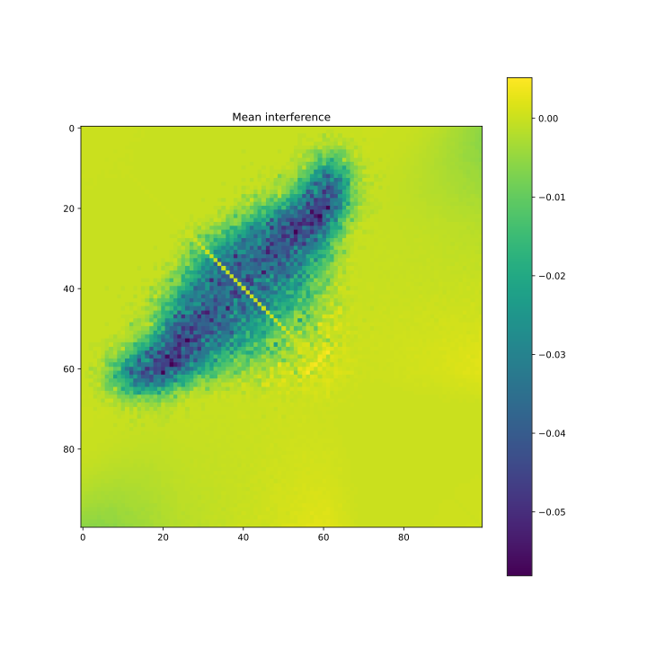
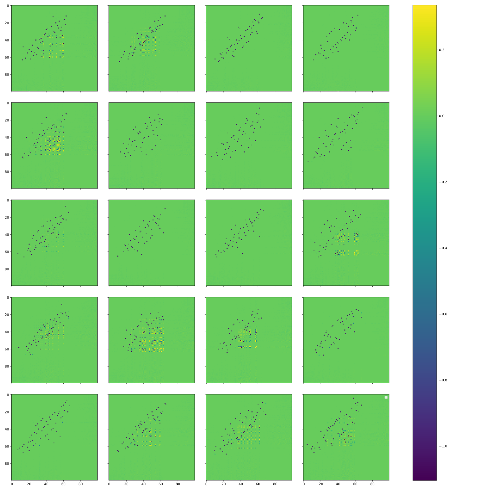
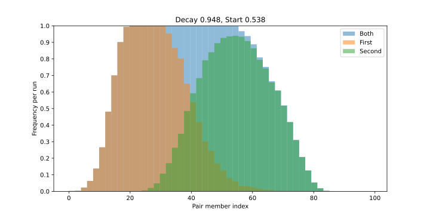
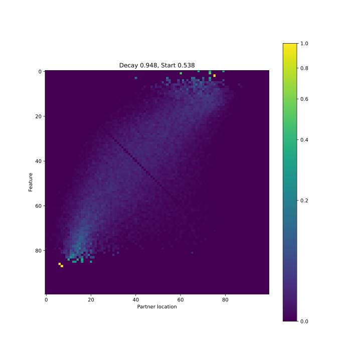
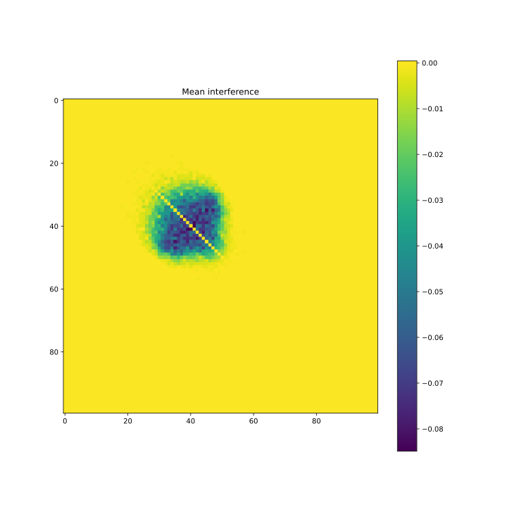

Aidan Ewart
Updated 11/05/2023
This is a DRAFT. Please don't share excessively, for my sake. A collab notebook of this work is in progress. If some of the images don't load properly, clicking on them seems to help.
This is intended as a possible answer to question 4.4 of Neel Nanda's Concrete Open Problems in Mechanistic Interpretability sequence. I also accidentally discovered a situation where ReLU has different superposition behaviour to GELU, another one of the questions on the sequence, but don't investigate this further. Most of the code to train the models and generate the plots is on GitHub (but be warned, it is very 'research-grade').
If you have any thoughts about how I can improve this post, or what follow-up work to do, please feel free to shoot me an email at aidanprattewart [at] gmail [dot] com, or DM me on discord: my username is baidicoot#9673.
TL;DR: I discover that when Anthropic's ReLU output model is trained on datasets where sparsity is allowed to vary between features, low-sparsity features typically form antipodal pairs with features with very high sparsity. I propose that this can be derived by inspecting the loss function directly, and consider some possible follow-up exploration directions. I also note that this behavior seems very dependent on the choice of activation function, interestingly varying significantly between ReLU- and GELU-activated models.
Polysemanticity with Variable Sparsity
[WIP] Introduction
I assume that the reader has read Anthropic's Toy Models of Superposition paper.
Results
I trained 1024 ReLU-output models as described in the Toy Models paper (100 input features, 40 dimensions for the internal representation). I keep feature importance uniform, but set feature density to where is the probability that feature is non-zero. Formally, the value taken by feature is given by where and is taken from some distribution with .
I then plot the matrix (with diagonal elements set to 0) which represents the amount of interference between each pair of features, and average these matrices over all 1024 models:

As you can see, there is a pretty clear negative correlation between the sparsities of two features that are likely to interfere with each other. We can verify that features mostly interfere by forming antipodal pairs by plotting the matrices for individual models:

To test the hypothesis that antipodal pairs form between features with negatively correlated sparsity, I plotted the matrix of the same experiment by with four buckets of uniform feature density (specifically, , the average of their respective buckets in the previous experiment):
This makes my results very clear; features in the first bucket exclusively interfere with features in the second-last bucket, the highest-sparsity bucket that contains features represented by the network. The features in the second bucket also interfere with features in the third bucket, but predominantly interfere with features in the same bucket. I think this is good evidence that the correlation works both ways; it is also true that features with high sparsity are likely to interfere with features with low sparsity.
In order to more systematically identify antipodal pairs, for the rest of this post I simply select pairs of features that have high () interference with each other. While kind of janky, I think this is fit for purpose.
Having selected antipodal pair indexes for all 1024 models, I plot the distribution of the indexes of the second (higher-sparsity) feature for each index of the first (lower-sparsity) feature (this is basically equivalent to normalizing the above plots so that each row sums to one):

This is again a pretty clear negative correlation (in fact [TODO: LIN REG RESULTS]).
As a final touch, I plotted the distribution of the first and second features in each antipodal pair for a range of different sparsity hyperparameters (where ). This is interactive, and you can use the sliders to change the hyperparameters:


Discussion
Why does this happen?
Be Warned: The 'maths' here is mostly for the purpose of gaining an intuition as to why this might be happening; as such, don't expect it to be very formal.
I think inspection of the loss function yields a decent intuition as to why this happens. Ignoring the ReLU activation and bias for the time being (it is fine to do this, as we ignore the loss due to interference, assuming ReLU mostly cancels this out, and for positive values), the loss of the network is given by:
Noticing that , and , we can rewrite this as:
If we allow for all (i.e. only allow antipodal pairs, independent values, or the same representation) in a geometrically coherent manner, and only allowing for , then the second term of this expression is minimized when we choose pairs of features to be stored antipodally such that is roughly constant for all (assuming geometric sparsity).
Intuitively, this makes sense. We expect lossy interference to occur when both features and are nonzero, which occurs with probability . By minimizing a weighted sum of these probabilities, we minimize the expected loss due to interference.
Follow-up Experiments
I'd like to test properly how dependent this behavior is on the setup of the model, and how correct my intuitive explanation of the mechanism behind this is. I think the following exploration directions would be interesting:
- Using different sparsity scaling functions, and seeing how this affects the distribution of antipodal pairs; ideally one would be able to isolate possible causes of this behavior with a bunch of different sparsity functions.
- Some of the distributions are significantly skewed when the network represents all features in superposition; it would be interesting to try and find a sparsity function that minimizes the impact of this skewness.
- Using different activation functions, and seeing how this affects the distribution of antipodal pairs; some preliminary experiments suggest that functions like quadratics, cubics and quartics display this behavior, while weirdly things like GELU do not (as much).
- It would be interesting to see more thoroughly how this behavior changes the distribution/geometry of more complex polytopes, instead of limiting my analysis to the simplest case of antipodal pairs.
Appendix: Weirdness with GELU
I also ran the same experiment with GELU activation instead of ReLU. The results are very different:

GELU has a much denser distribution of interference, with a higher mean interference in the center than ReLU. I do not currently have any idea why this might be the case, but I am looking to run more experiments to investigate it.